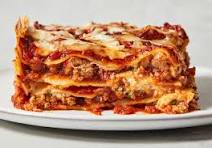

Lasagna Recipe
Description

Lasagna is a classic Italian dish known for its layers of rich, meaty sauce, creamy ricotta cheese, and gooey melted mozzarella, all nestled between sheets of tender pasta. This homemade lasagna recipe brings together hearty flavors with a slow-simmered tomato and ground beef sauce, perfectly seasoned with basil, oregano, and garlic.
Each bite delivers a comforting blend of textures, from the soft pasta to the rich, cheesy layers. Baked until golden and bubbly, this lasagna is perfect for family dinners, special occasions, or meal prep. Serve it with a side of garlic bread and a fresh salad for the ultimate Italian feast! 🍝
Ingredients
For The Meat Sauce
- 1 lb (450g) ground beef (or Italian sausage)
- 1 onion, chopped
- 3 cloves garlic, minced
- 1 can (28 oz) crushed tomatoes
- 1 can (15 oz) tomato sauce
- 1 can (6 oz) tomato paste
- 1/2 cup water
- 2 tablespoons sugar
- 2 tablespoons fresh basil, chopped
- 1/2 teaspoon salt
- 1/4 teaspoon black pepper
- 1/4 cup fresh parsley, chopped
- 1/2 cup red wine (optional)
For The Ricotta Cheese Mixture
- 15 oz ricotta cheese (or cottage cheese)
- 1/2 cup grated Parmesan cheese
- 1 tablespoon fresh parsley, chopped
- 1 egg
Additional Ingredients
- 12 lasagna noodles, cooked
- 3 cups shredded mozzarella cheese
- 1/4 cup grated Parmesan cheese
Steps to Make Lasagna
- In a large pan, cook the ground beef over medium heat until browned. Add chopped onions and garlic, cooking until soft. Stir in crushed tomatoes, tomato sauce, tomato paste, water, and seasonings. Let it simmer for 30 minutes, stirring occasionally.
- In a bowl, mix ricotta cheese, egg, Parmesan cheese, and dried parsley until well combined. This will add a creamy layer to the lasagna.
- Preheat the oven to 375°F (190°C). In a 9x13 inch baking dish, spread 1 cup of meat sauce, followed by a layer of 3 lasagna noodles, ricotta mixture, and mozzarella cheese. Repeat the layers until all ingredients are used, topping with Parmesan cheese.
- Cover the dish with foil and bake for 25 minutes. Remove the foil and bake for another 25 minutes until the cheese is golden and bubbly.
- Allow the lasagna to rest for 10 minutes before slicing. This helps the layers set for perfect servings. Enjoy with garlic bread and a fresh salad! 🍝😋
Home